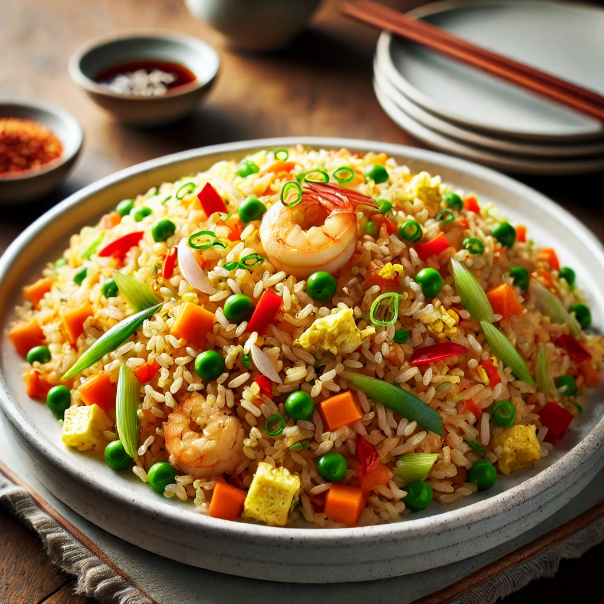

Fried Rice Recipe

Description
This fried rice is a delicious mix of rice, vegetables, and protein, all stir-fried to perfection.
Prep Time: 15 minutes
Cook Time: 15 minutes
Ingredients
- 2 cups cooked rice
- 1 cup mixed vegetables (carrots, peas, bell peppers)
- 2 eggs, beaten
- 3 green onions, chopped
- 2 tbsp soy sauce
- 1 tbsp sesame oil
- Salt and pepper to taste
Instructions
- Heat sesame oil in a large skillet or wok over medium-high heat.
- Add mixed vegetables and stir-fry for 3-4 minutes until tender.
- Push the vegetables to one side of the skillet and pour the beaten eggs into the other side. Scramble the eggs until fully cooked.
- Add the cooked rice to the skillet and mix everything together.
- Pour soy sauce over the rice mixture and stir well to combine.
- Add chopped green onions, salt, and pepper. Stir-fry for another 2-3 minutes.
- Remove from heat and serve hot. Enjoy your delicious fried rice!
Home